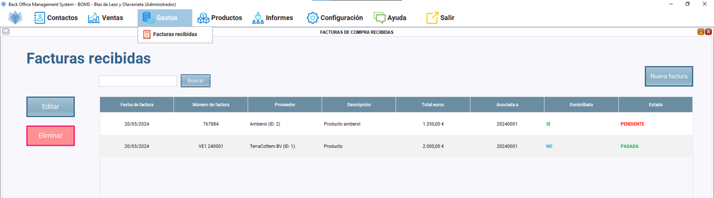
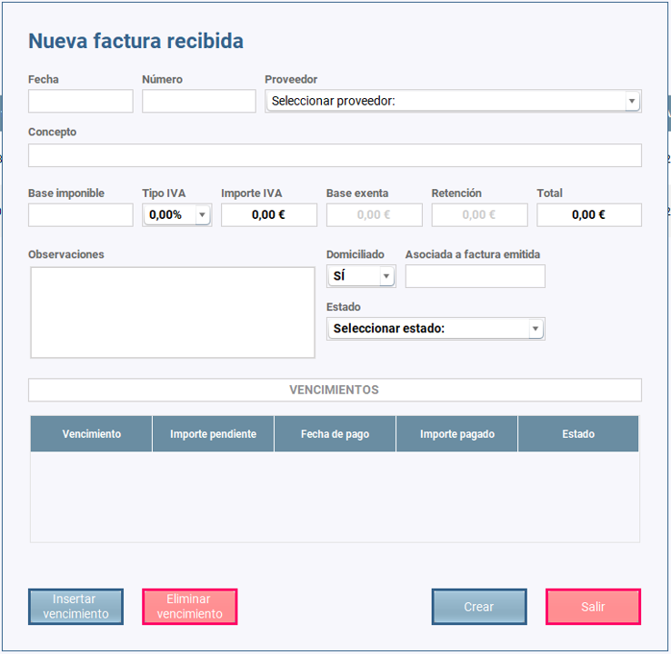
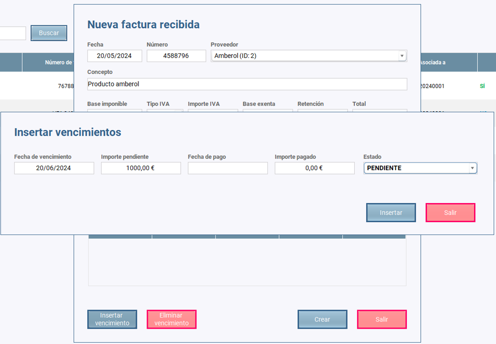
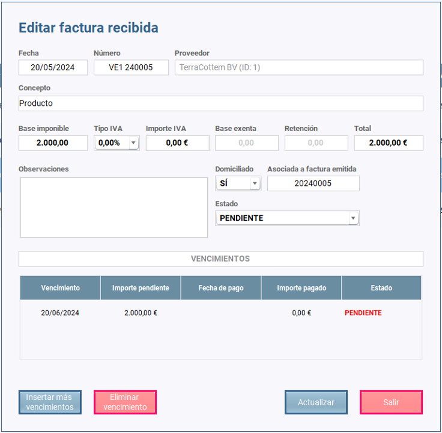
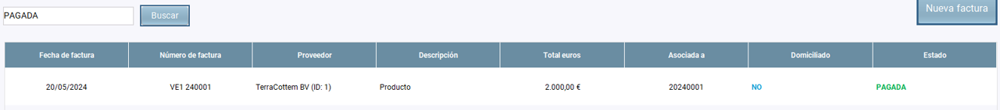

Una vez que hacemos clic en Gastos/Facturas recibidas se abre el escritorio de facturas de compra.
Podemos observar una tabla con todas las facturas de compra creadas y tres botones: uno para añadir más facturas, uno para editarlas y otro para eliminarlas.
Las facturas no se pueden eliminar si tienen vencimientos asignados, sólo editar por si hay que cambiar un vencimiento o algo relacionado con los costes.
Si se quiere eliminar hay editarla eliminando antes los vencimientos.

El botón "NUEVA FACTURA" hace que se abra un diálogo en el que insertaremos la información relevante de la factura compra.

Podemos observar que se abre el diálogo en blanco para rellenar toda la información relevante de la factura
Asimismo, podemos ver dos botones: uno para insertar vencimientos y otro para eliminarlos si nos equivocamos.
Antes de insertar líneas de vencimiento es necesario seleccionar el proveedor en el combo box y el estado del vencimiento poniendo normalmente "PENDIENTE".
El estado de la factura de compra se podrá modificar posteriormente cuando corresponda a "PARCIALMENTE PAGADA" o a "PAGADA".
El botón "INSERTAR VENCIMIENTO" hace que se abra un diálogo en el que añadiremos las fechas de vencimiento que corresponda
y los correspondientes estados "PAGADO" o "PENDIENTE".

Ponemos la fecha de vencimiento, el importe pendiente, la fecha de pago, si está pagada, con el importe pagado, y el estado de "PENDIENTE" o "PAGADO"
según corresponda
Cuando hemos terminado de insertar los vencimientos, cerramos el diálogo, hacemos clic en crear y se crea la factura correspondiente.
El botón "EDITAR" hace que se abra un diálogo en el que añadiremos nueva información de la factura proforma o modificaremos lo que sea necesario.
Para ello antes es necesario seleccionar la fila en la que se encuentra la factura de compra que queremos editar.
Podemos ver que el botón "CREAR" pasa a llamarse "ACTUALIZAR" y podemos "AÑADIR MÁS" líneas de vencimiento si es necesario.

El botón "BUSCAR" nos permite buscar las facturas de compra que están en la base de datos. La búsqueda podemos hacerla:
Únicamente es necesario introducir algunos caracteres y pulsar en el botón "BUSCAR" para que lo encuentre sin problemas
